Diary-津了（天津篇）
因为导师闺女要高考管不了我们，就跟杰哥工作日偷跑天津嘻嘻嘻
这篇博客是 6.6-6.7 在天津老城区 happy 的流水账🤪！
目录
4. 天津古文化街旅游区
坐地铁从会展中心到东南角，16:52—18:15，￥8.1。本来想着直接去天津之眼的，但是看看天色还亮，不如先去宾馆休息一会儿。从地铁站到宾馆的途中经过天津古文化街旅游区，玩！
18:23 新世界百货
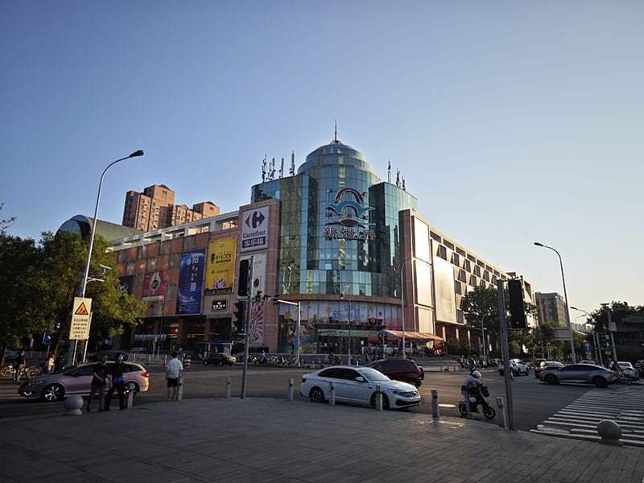
百货公司！
18:27 天津古文化街旅游区

古文化街是天津市南开区的一条由仿中国清代民间小式店铺组成的商业步行街，原为以天津天后宫为中心的“宫南大街”和“宫北大街”，是天津最早的文化、宗教和商贸聚集之地。目前，古文化街北起通北路，南至水阁大街，全长 687 米，宽 5 米。2011 年，天津市规划局将这里纳入历史文化街区规划，定名古文化街历史文化街区。
emmmm 就是一个网红街区，又是经典的”我在 XX 很想你“招牌。硬要类比的话，有点像北京的南锣鼓巷？杰杰买了一些麻花，吃的我口好干，咳咳咳。买了一瓶炖梨汤，￥15。天津相声也是很有名的，这里可以看到很多相声馆。”竹板这么一打啊，别的咱不夸~“。泥人张没开门，狗不理对标北京全聚德烤鸭，怕被坑，狗都不理😅。
5. 天津之眼
19:02 天津眼镜城
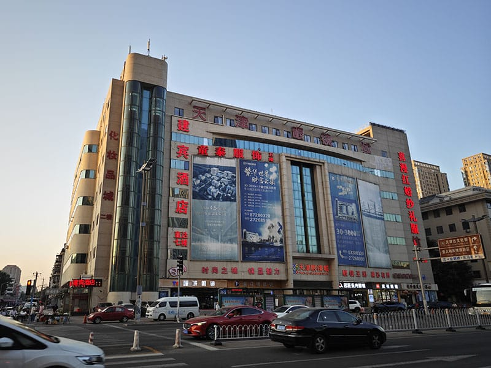
离开天津古文化街旅游区，前往北马路回宾馆 nie 一 nie。
宾馆住的是雅米 · 眠设计酒店（这什么网红名），大床房￥101.77，主打一个经济实惠。只有一床被子，要跟杰杰共度春宵一晚了😅。
拉了个屎后躺床上休息等天黑，20:00，步行前往天津之眼！
20:29 天津之眼
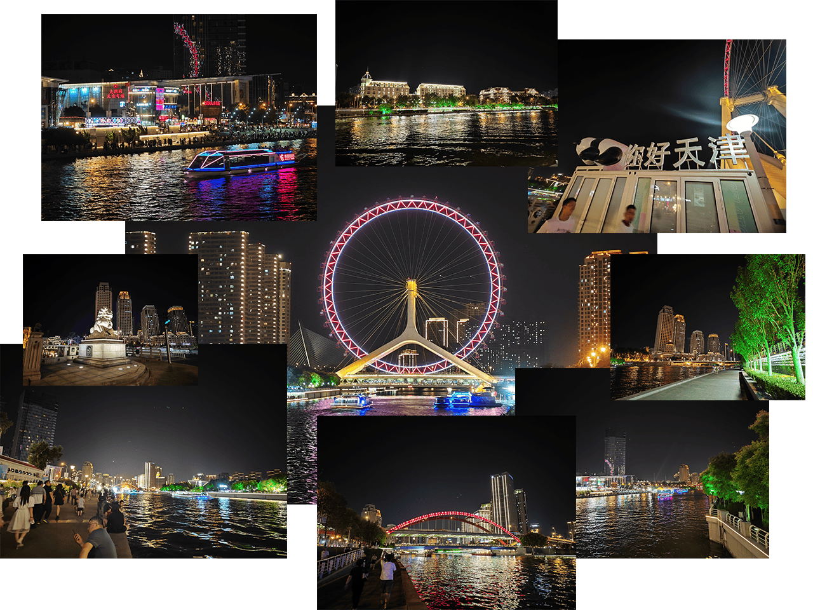
天津之眼
（又叫分手之眼）是位于天津市红桥区三岔河口永乐桥下的一座世界著名的摩天轮，高度达到 120 米，是世界上最高的摩天观景轮之一。乘坐天津之眼可以欣赏到整个天津市的美景，包括海岸线、城市景观和著名建筑等。
乘坐天津之眼摩天轮，￥80 白天，￥100 晚上🫣。结果人还巨多没买成票，看来要提前预约。那就到海河岸欣赏一下夜景吧。
不得不说天津的结构跟福州蛮像，都曾作为列强租界，老城区在西边不靠海，都尝试发展滨海新城，海河就对标一下闽江，城建、科教福州大输特输😅，物价差不太多，但是房价福州大赢特赢！天津的房子还蛮便宜。
6. 海河风景线
07:57 鼓楼
晚上回宾馆洗好澡沾床就睡，宾馆居然是中央空调冷的一笔差评！早上醒来发现充电宝的电都用完了，手机剩余 66% 的电。两个大水逼居然凑不出一个充电插头，宾馆的插头居然还要扫码充值 6 h ￥4，我头铁，我拒绝。于是决定去旁边的一个小米之家看看能不能直接买一个充电宝。这里还在宾馆租了一个充电宝，￥2.5，30 min 还不是快充，先给更水的手机和充电宝都没电的大水逼杰杰冲了。
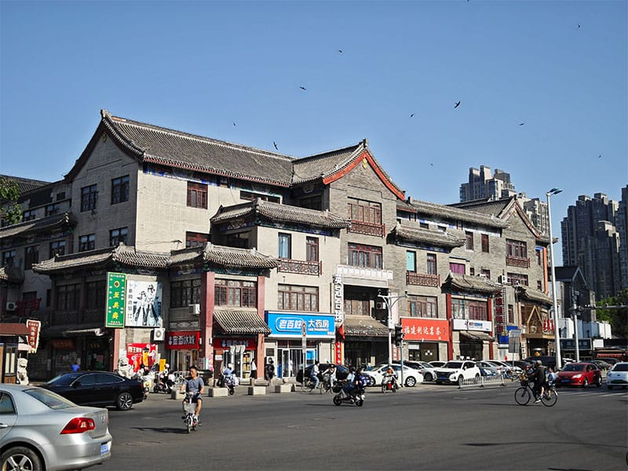
来到鼓楼巷吃个早餐，麦当劳双层板烧鸡腿堡（小的一笔）+ 橙汁，￥20。小米之家没开门，寄！
08:14 天津文庙博物馆
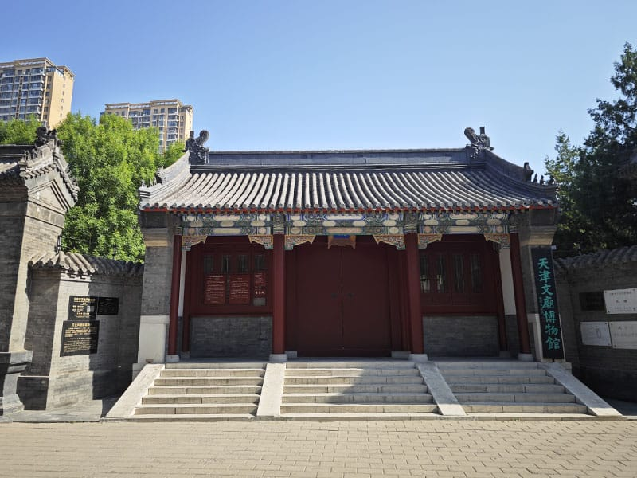
途径天津文庙博物馆，9:00 才开门，门票￥10。不等了告辞。
08:33 海河中心广场公园
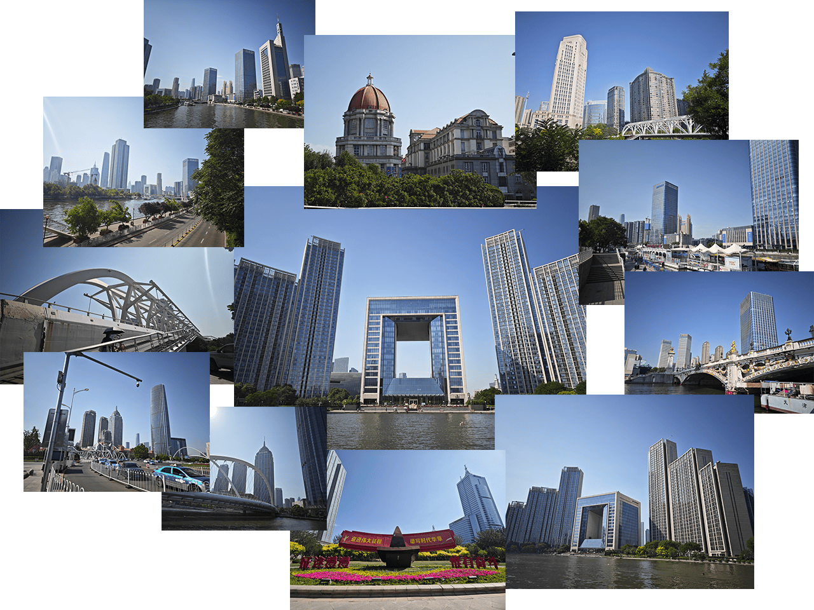
打算骑车过北安桥去天津意式风情区。我说婷婷不如先去南边的海河中心广场公园？这里可以看到很多惬意的天津老头老太跳广场舞，还有牛逼的赤膊大爷在河里游泳。旁边的高楼大厦随便拿一点都吊打保定啊😶！甚至有点上海黄浦江的味道。
中间连共享充电宝都西内了，赶紧找下一个点归还充电宝。
09:05 解放桥
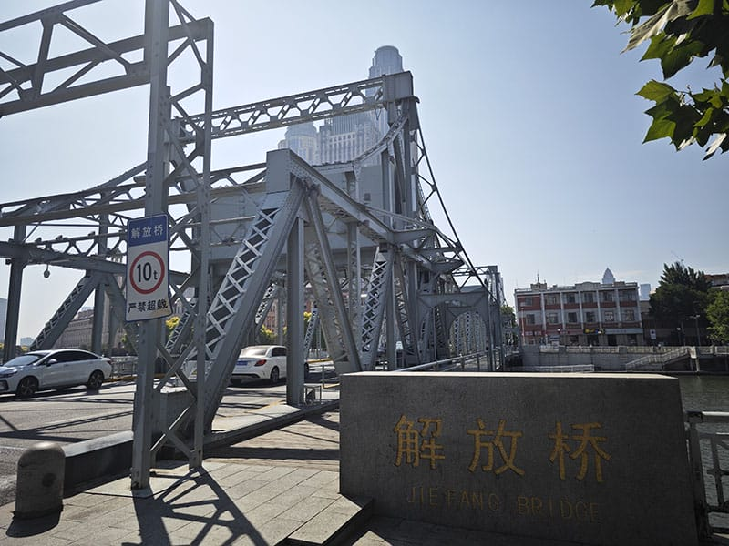
在解放桥头打个卡！
解放桥是中国天津市连接和平区与河北区的一座桥梁建筑，原名“万国桥”、“法国桥”和“中正桥”，于 1927 年 10 月 18 日建成通车，全长 97.64 米。作为天津租界时代留存下来的重要建筑之一，该建筑目前是天津市文物保护单位。
09:07 世纪钟
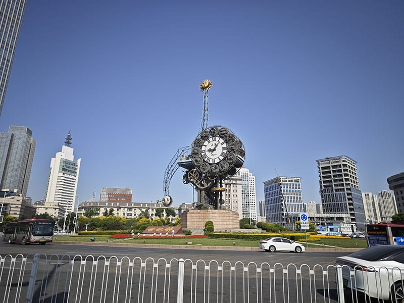
在世纪钟前打个卡！
天津世纪钟是天津市人民政府为迎接二十一世纪于 2000 年 12 月 25 日建立的大型城市雕塑，坐落于河北区解放桥桥头。天津世纪钟由全金属材料构筑而成，建筑高四十米，重一百七十余吨，在钟表面的外环和内环之间镶嵌着十二星座的青铜浮雕。
09:08 天津站
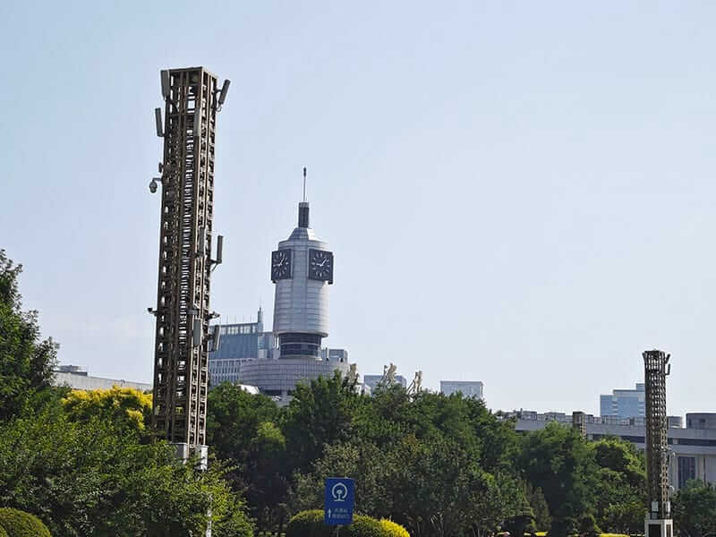
在天津站前打个卡！然后一路向西进意式风情区！
天津站，俗称天津东站，位于天津市河北区新纬路 1 号，地处河北区与河东区交界的海河北岸。
天津站始建于清光绪十二年（1886 年），是目前天津市最主要的铁路客运站之一，为中国铁路北京局集团有限公司下辖的特等站，有津山铁路、京津城际铁路、津秦高速铁路等在此交汇。天津站是天津市的铁路门户，亦是天津站交通枢纽工程的核心组成部分。旅客可在天津站换乘天津地铁 2 号线、3 号线和 9 号线。
天津站历史上曾以天津车站、老龙头火车站、天津紫站、天津老站和天津东站为站名。
7. 天津意式风情区
09:15 沙县国际大酒店
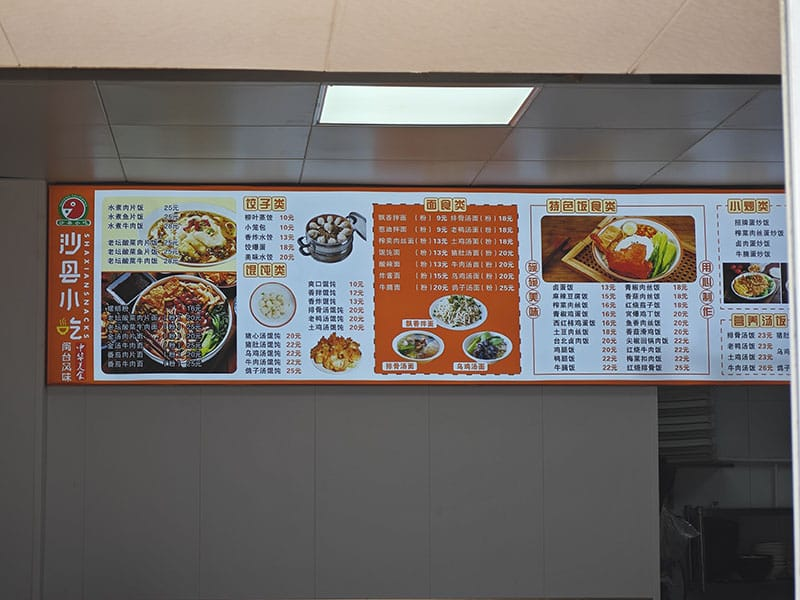
这个沙县小吃，emmmm 价格跟福州东街口差不多，贵的一比。找共享充电宝归还点找了老半天才还上，我怕电实在不够也租了一个，结果怕又找不到归还点，就冲了 9 分钟就又还了，不足一小时按一小时计价，￥3，giao！
09:27 天津意式风情区
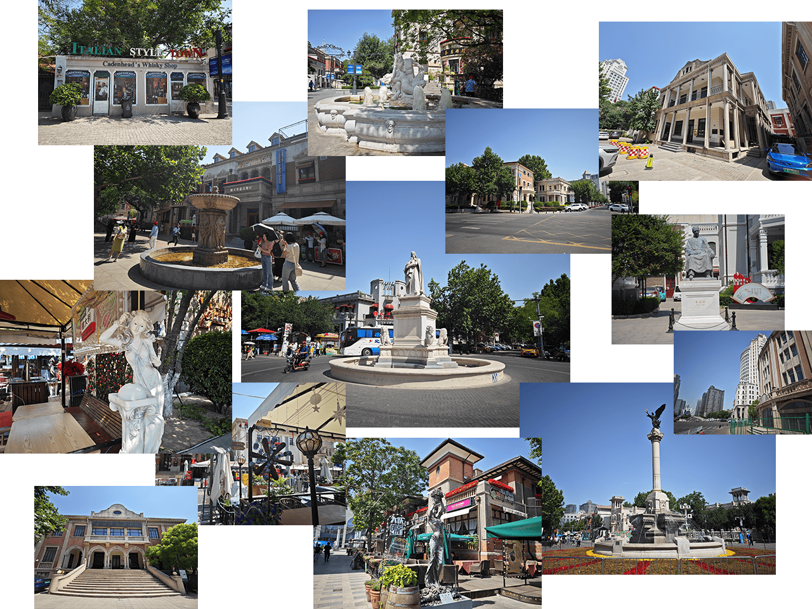
天津意租界始设于 1902 年。八国联军侵华期间，意大利军队乘机占领了海河左岸（东北岸）、俄军占领区以西的地段，并宣布为意租界。界址为：东北自意中交界路（今兴隆街）沿京山铁路至俄租界，南沿波格拉尼路（今五经路）与俄租界毗邻，西南临海河，西北沿意奥交界路（今北安道）至兴隆街，占地近八百亩。
曾作为意大利的租界的天津意式风景区，各种欧式风情！觉得作租界这件事情还是有点两面性的。
天津租界开辟之后，西方文化对天津各个方面的影响不断渗透。租界的建设对天津的城市建设起到了促进和示范的作用。天津租界除了影响天津城市风貌的改变之外，租界文化还通过与教会有关的教育、报刊杂志等影响着天津人的文化生活。由租界教会创办的学校、医院、报刊和杂志，代表着不同国籍、不同政治利益，某种程度上也意味着文化殖民。但是它们同时又代表着不同的文化，呈现出多元性、多样性的特点，客观上促进了天津文化的多元融合与发展，在近代天津迈向现代大都会的初期，发挥了重要的作用。
10:27 梁启超故居
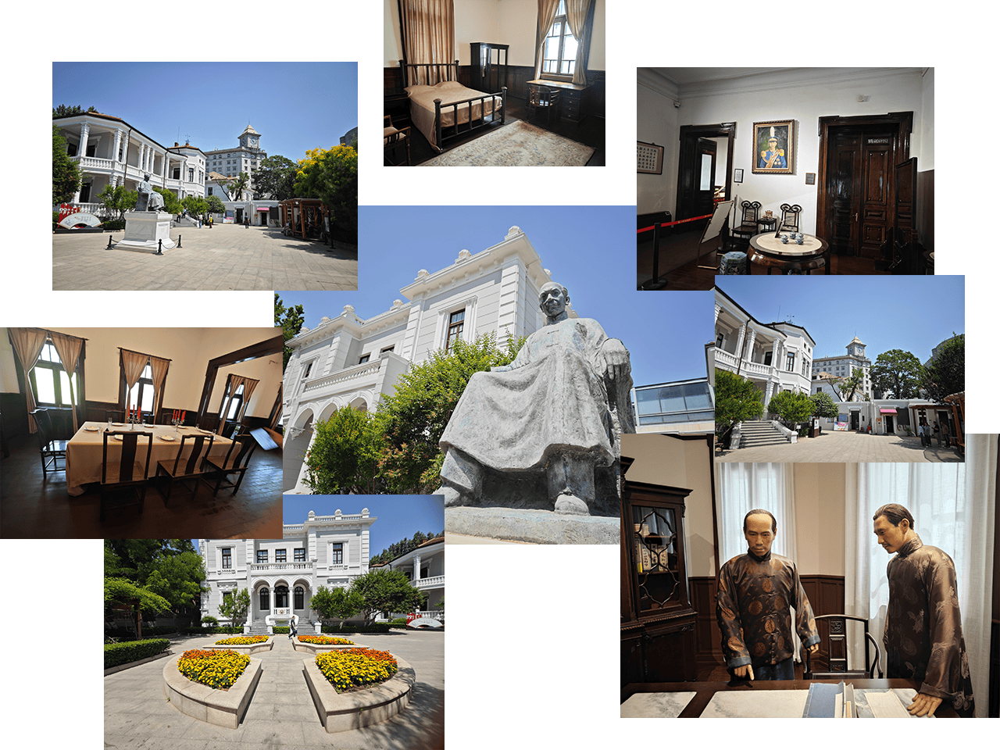
梁启超故居，门票￥10，有两个建筑，左边是饮冰室，右边是故居。看得出梁启超家族是真的有钱，然后他的后代也能享受很好的教育资源，成为很牛逼的人物🤔。
梁启超（1873 年 2 月 23 日 — 1929 年 1 月 19 日），字卓如、宏猷、任甫，别号任公、饮冰室主人，广东省广州府新会县潮居都茶坑乡人，人称梁新会，中国近现代著名政治家、思想家、教育家、史学家、文学家、改革家、新法学家、社会活动家、词汇发明家、书法家等，清末戊戌维新变法领袖之一，新文化运动驱动者，为民初重要的知识启蒙份子，康有为弟子。
梁启超在青年时期曾经康有为合作进行戊戌变法，事败后出逃日本，在海外推动大清君主立宪。中华民国建立后一度入袁世凯政府先后担任司法总长、币制局长等职务，之后对袁世凯称帝不满，与蔡锷密谋发动护国运动倒袁。还有对张勋复辟等进行严词抨击，以及一度加入段祺瑞政府担任财政总长兼任盐务总署督办。他倡导新文化运动，支持五四运动。清华大学国学研究院四大导师之首。
8. 五大道文化旅游区
11:20 埃菲尔铁塔
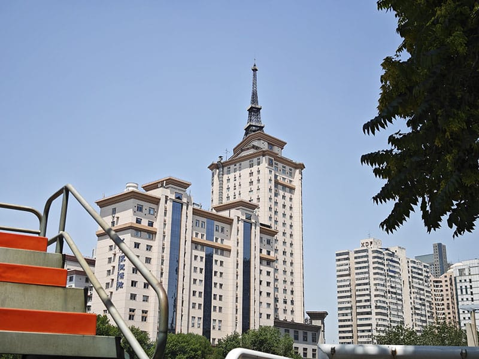
乘公交车前往云南路，开启下一个景点——五大道文化旅游区！先拍一张用埃菲尔铁塔作避雷针的建筑。
11:37 海鲜捞饭
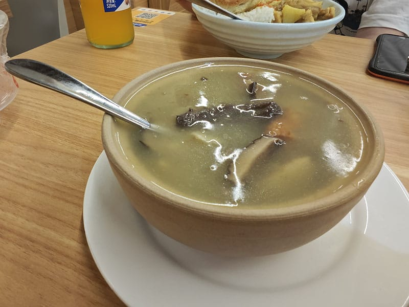
在五大道外面解决一下午饭。虽然价格还是比较贵，但还算有点特色。海参捞饭 + 米饭 + 牛肉饼 + 一次性餐具（结果发现根本不需要），￥52。然后冲了个电 ￥3，总算是苟住了！
天津的食物不像北京和保定那么咸，这很好！
12:08 五大道文化旅游区
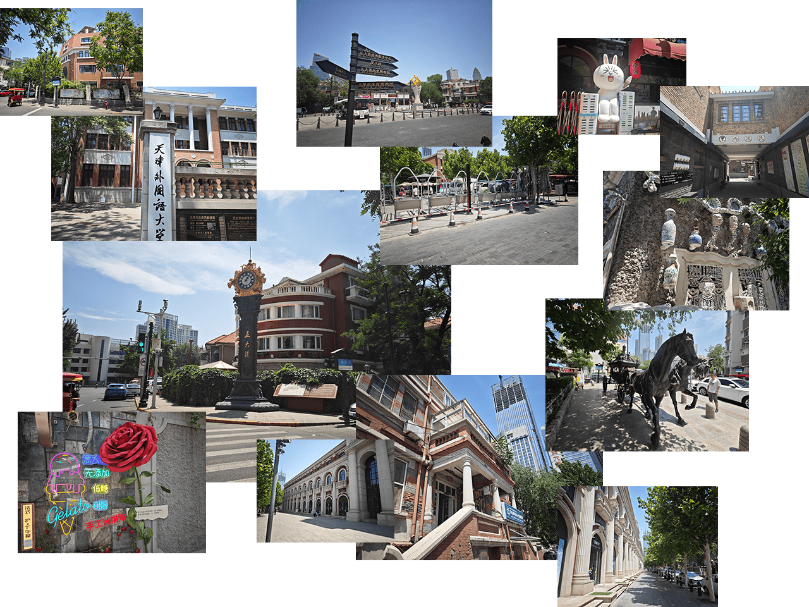
各种名人故居和网红小吃交错的五大道。旁边有好多骑着三轮想拉我们上车的车夫，￥50 两个人。杰杰禁不住诱惑坐了，感觉有点不值😅。五大道很大，认真玩的话可以玩一整天。
五大道是人们对天津英租界在墙子河外的推广界的俗称，是位于天津市市中心偏南，今属和平区的一片民国年间形成的高级住宅区。1903 年被划为天津英租界的推广界后，开始结合海河疏浚工程，填筑原有的沼泽洼地，到 1920 年代陆续建造大片洋房，成为天津最高档的住宅区之一，曾吸引不少民国初年的军政工商各界要人入住。现在，五大道已成为天津最知名的观光景点之一，那些风格各异的欧陆风情小洋楼，使这里成为天津的“万国建筑博览会”。
这片地区东西方向有六条马路：马场道（原马厂道）、睦南道（原香港道）、大理道（原新加坡道）、常德道（原科伦坡道）、重庆道（河北路以东为原剑桥道；河北路以西为原爱丁堡道）、成都道（原伦敦道）。
这里有很多招牌说要争创 5A 风景区，这么牛逼的景区居然才 4A 吗？三坊七巷都 5A 了😅。
牛逼的杰杰居然买彩票中了￥20。
13:19 天津音乐厅
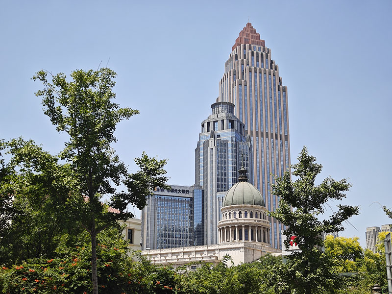
在五大道的钟打完卡后，去旁边的 711 补充一下饮用水，平价 ￥3。乘公交车去下一个景点——张学良故居！
9. 张学良故居
13:35 张学良故居
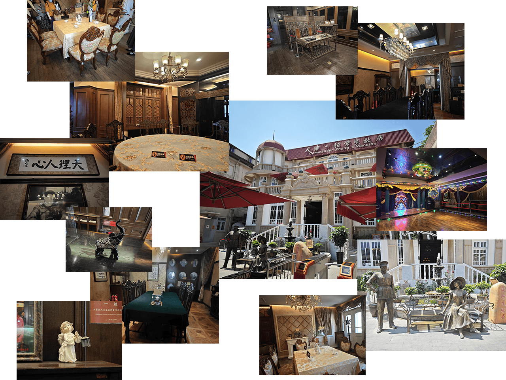
张学良（1901 年 6 月 3 日—2001 年 10 月 14 日），字汉卿，号毅庵，乳名双喜、小六子，中华民国陆军一级上将。中国军事将领和政治人物。中国奉天省海城（今辽宁省鞍山市海城市）人，祖籍河北大城。
1936 年 12 月 12 日，西安事变爆发。张学良和杨虎城扣押时任国民政府军事委员会委员长蒋介石以及陈诚、卫立煌、陈继承等中央军政大员；12 月 25 日，张释放蒋，并亲自送蒋由西安回到南京；后一直遭蒋软禁并随国府迁台。在蒋经国任内，张依然遭软禁，直到蒋经国逝世后，1990 年，90 岁高龄的张才被李登辉释放、重获自由，并移民美国夏威夷州安度晚年。
2001 年 10 月 14 日于美国夏威夷州火奴鲁鲁的斯特劳布医院病逝，终年 100 岁。
门票居然要￥80……美团票￥78。不过里面的装潢还不错，还有导游讲解，不算坑。导游把张学良说的是个大公无私的人，我从张学良故居的装修中看出他是一个很风流的人物😅，顶楼居然有一整层舞厅。
五千年历史看西安，一千年历史看北京，一百年历史看天津。
——导游
14:10 民国风情
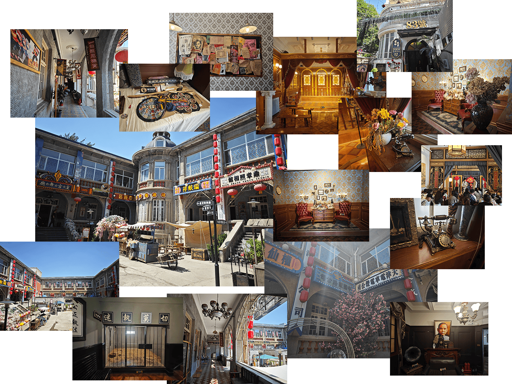
旁边还有一些民国风情的装修，看着很有民国电影的那种感觉啊！还可以听相声，不过观众好像都在玩手机没人听😅。
10. 中国瓷房子博物馆
14:36 中国瓷房子博物馆
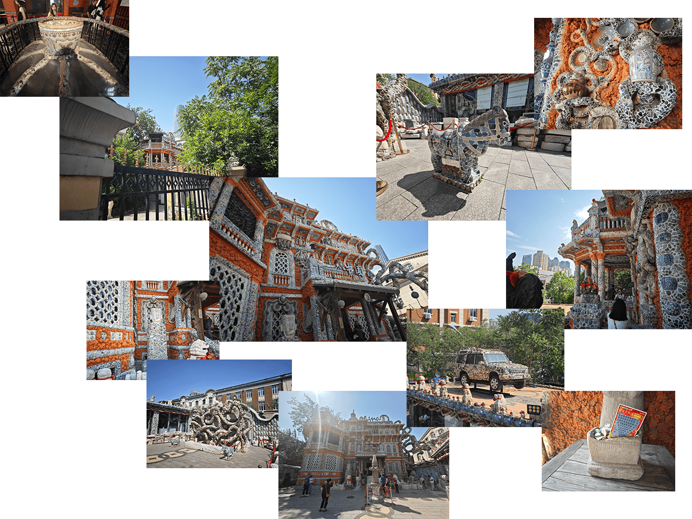
满是陶瓷的中国瓷房子博物馆，内外都是瓷，花的一比。门票￥50。
瓷房子是一座用多件古董修成的一座法式洋楼。是房主张连志亲自设计，用其珍藏的古瓷器、汉白玉石雕、水晶石及玛瑙等多种名贵玉石作为原料，让洋楼华丽变身，披上”中式外衣“。因为用料珍贵，这座房子可谓是价值连城。
里面有很多佛像，然后会有人往里面放钱撒烟（给佛递烟真的好吗？），杰杰直接把之前中了 ￥20 的彩票送给佛像🤪。
11. 中心公园
14:58 中心公园
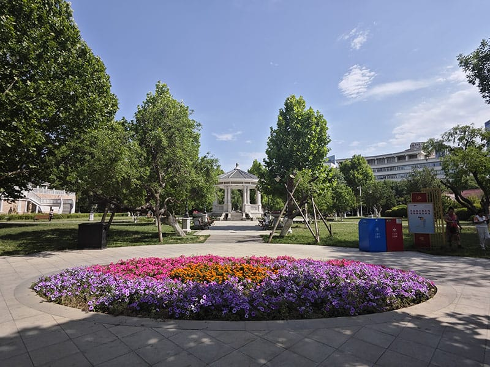
安逸的中心公园，蓝绿白三色调看着很舒服。旁边还有牛逼的老头下围棋，我看了看觉得白棋要寄了😅。
12. 天塔
15:10 天津天河城购物中心金街店
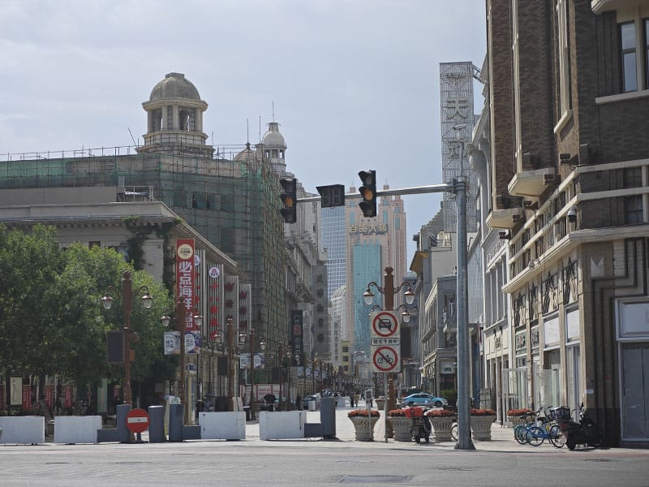
17:35 回保定的车，想着还能最后两个小时还能再玩一个地方，冲！看着天津的招牌，还有一个电视塔没去，冲！
15:31 鲁能国际中心
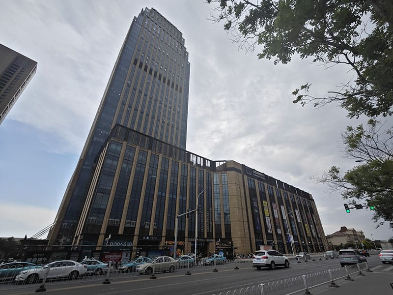
天津还真是地铁交错，而且一下车就能找到一个商业广场。
15:32 天津工人报
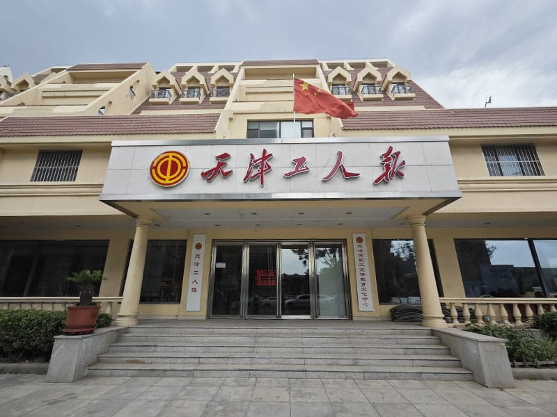
有点红色气息的天津工人报，不过天津的红色气息要比保定少很多了。
15:41 沙尘暴
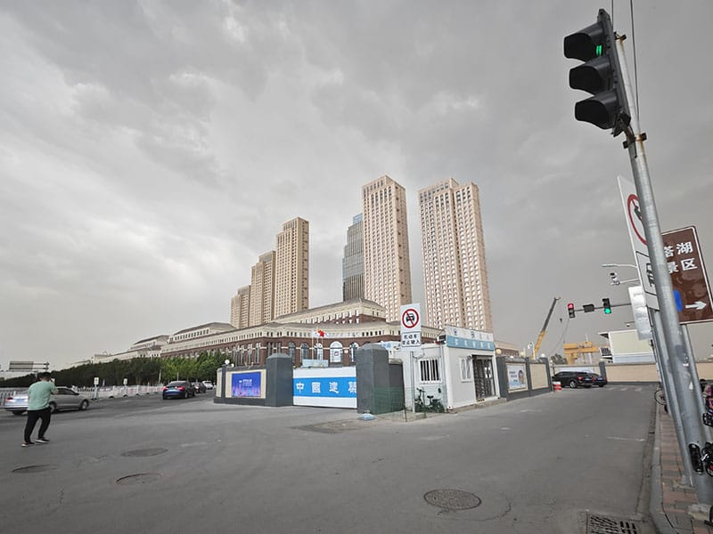
熟悉的河北沙尘暴又回来了，本来想去天塔上转转，￥50。又担心大暴雨 emmm 打个卡吃个饭回去吧。
15:42 天塔
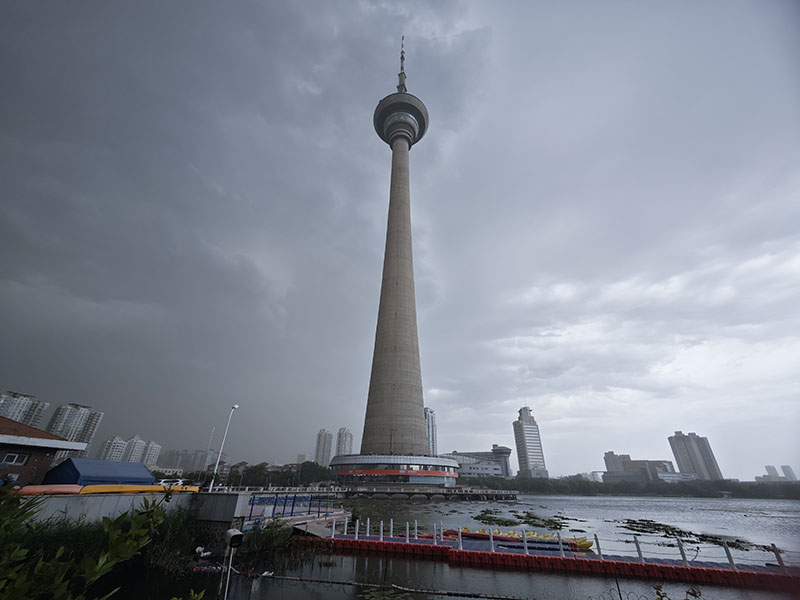
打完卡就润！
天津广播电视塔，又称天塔，为天津市电视调频广播发射中心，坐落于于天津市河西区卫津南路 1 号，始建于 1988 年 6 月 5 日，历时 3 年 4 个月，建高 338 米，1991 年 10 月 1 日竣工时是亚洲第一高塔。天津广播电视塔建设总投资 17,500 万元，占地面积 22 公顷，建筑面积 11500 平方米，塔尖高 415.2 米，重 4 万余吨。截至 2018 年 6 月，天塔是中国第三高塔和世界第七高塔。天塔周围的 22 公顷水面名为“天塔湖”。天津天塔湖风景区被评为中国国家 4A 级旅游景区。天津广播电视塔也被誉为津门十景的“天塔旋云”。
蛮高的，可惜天气太差了，可能晚上来会更好看一点。
15:44 电能小镇
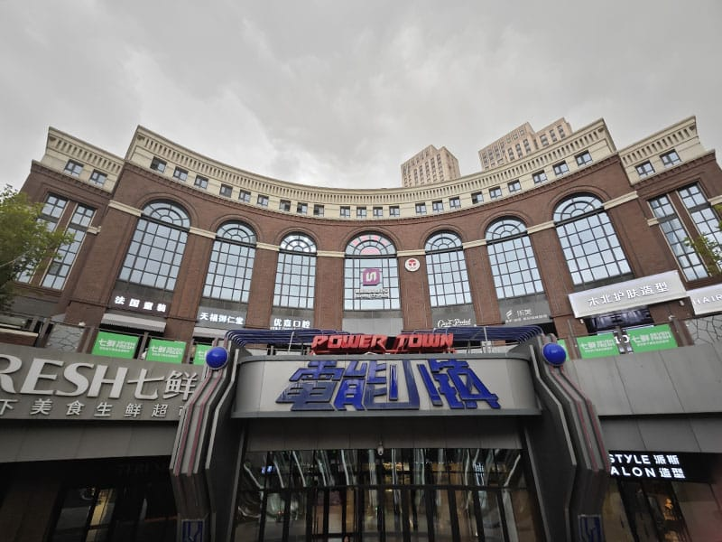
吃了一餐卤肉饭，￥24。
13. 返程高铁
16:33 开心鸭
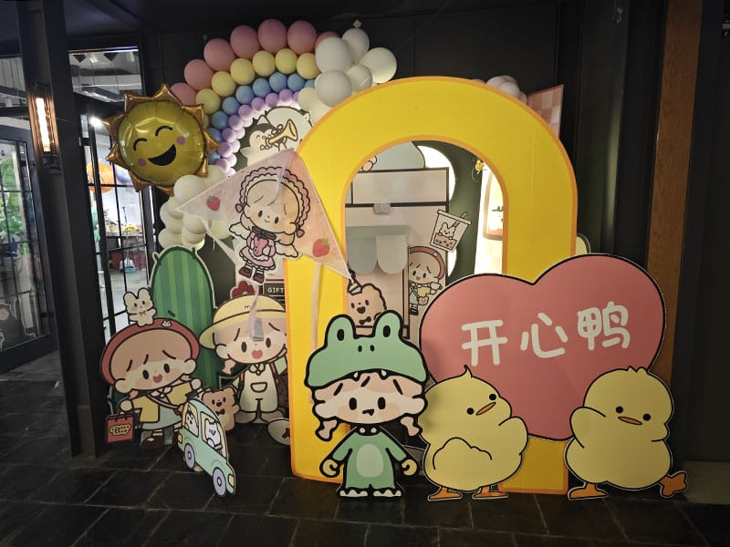
天津之旅就要结束了，玩得开心鸭！
17:02 天津站
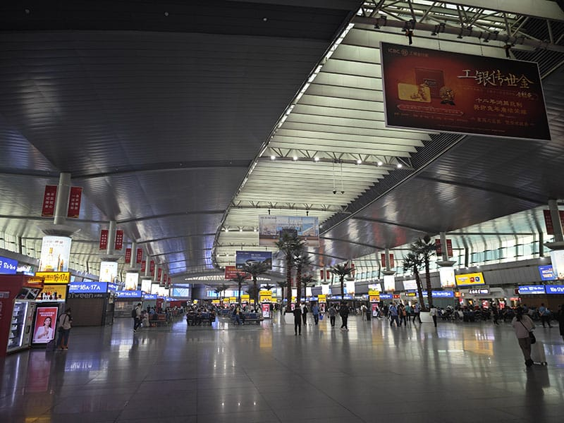
又是一个巨大的火车站，感觉不输天津西。
17:24 润！
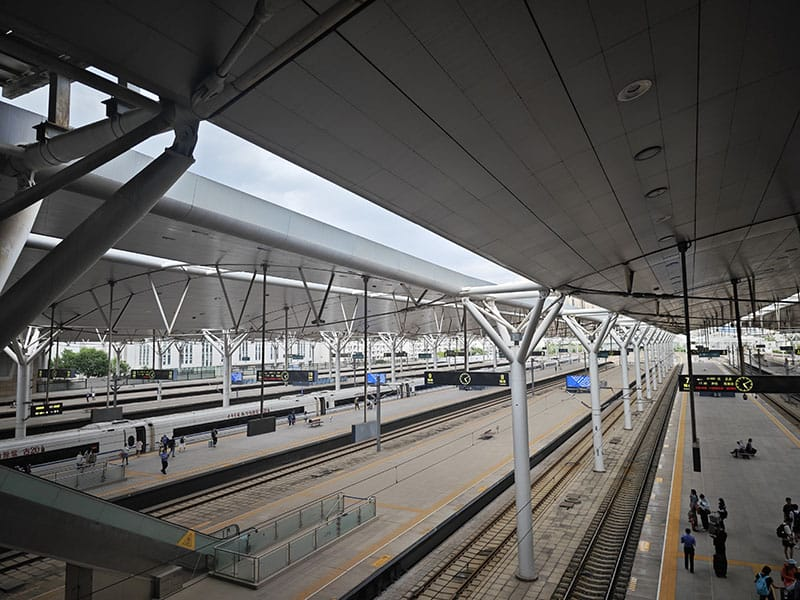
检票准备走了。车票￥68.5：
- 17:33 天津
- 17:43 天津西
- 18:16 霸州西
- 18:30 白沟
- 18:42 白洋淀
- 19:00 保定东
17:50 再见天津！
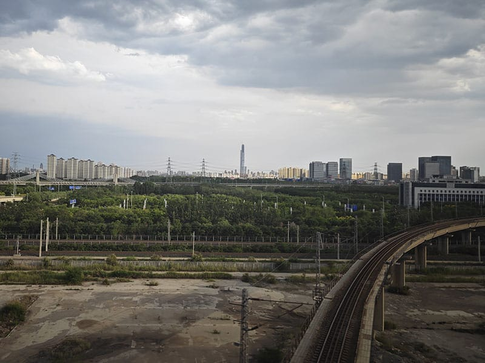
远去的天津，中间那个高楼我也不知道叫什么😅。查一查：
高银金融 117，又称天津高银 117 大厦，是位于中国天津市西青区的摩天大楼，高 597 米，由高银地产集团投资，中国建筑第三工程局负责兴建，2008 年开工，2015 年 9 月 8 日实现结构封顶后随即停工，为目前世界最高的烂尾建筑。
大厦地下 3 层，地上 117 层，是“新京津高银天下”项目的主要建筑。该项目另包括已抵押予中国银行的办公楼“盛世高银中心”及“高银经典中心”，副楼“帝堡高银中心”，住宅“富国高银”及马球会。高银金融 117 位于天塔的正西方，其结构高度 596.5 米，居于世界第四位，在中国是仅次于上海中心大厦的第二高摩天大楼。
牛蛙，居然比北京的中国尊还高，不过烂尾了好可惜。怪不得说天津之前很辉煌，但是近年来经济有点颓势。
18:11 霸州
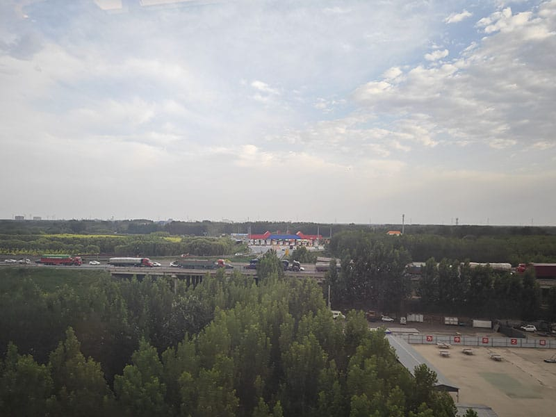
觉得名字很霸气的霸州。
霸州市是中华人民共和国河北省的一个县级市，由廊坊市代管，位于冀中平原东部，位于京、津、保三角地带中心，属环京津、环渤海城市群。
18:38 雄安郊野公园
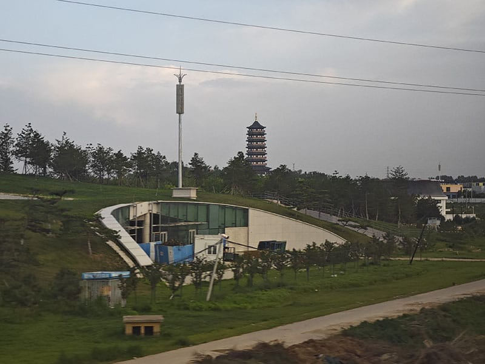
不知道是什么塔。
19:02 冀了！
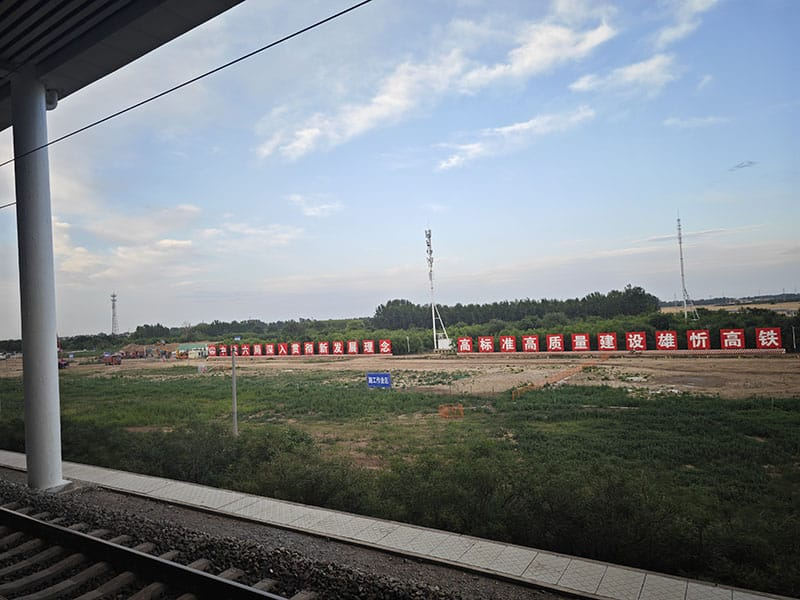
又回到了 BD 呜呜呜🤕……回宿舍洗好澡沾床就睡。